Plot models
gg_model_roc.RdPlot models
gg_model_roc(model, newdata = NULL, ...) gg_model_ks(model, newdata = NULL, ...) gg_model_coef(model, level = 0.95, show_intercept = FALSE, ...) gg_model_corr(model, upper = FALSE, ...) gg_model_vif(model, colors = c("#3aaf85", "#1b6ca8", "#cd201f"), ...) gg_model_importance(model, verbose = TRUE, B = 10, ...) gg_model_partials(model, newdata = NULL, verbose = TRUE, ...)
Arguments
| model | model |
|---|---|
| newdata | newdata |
| ... | ... |
| level | = 0.95 |
| show_intercept | show_intercept |
| upper | upper |
| colors | colors |
| verbose | verbose |
| B | B |
Examples
data("credit_woe") m <- glm(bad ~ ., family = binomial, data = head(credit_woe, 10000)) m <- featsel_stepforward(m, scale = 5, trace = 0) dnew <- tail(credit_woe, 10000) gg_model_roc(m)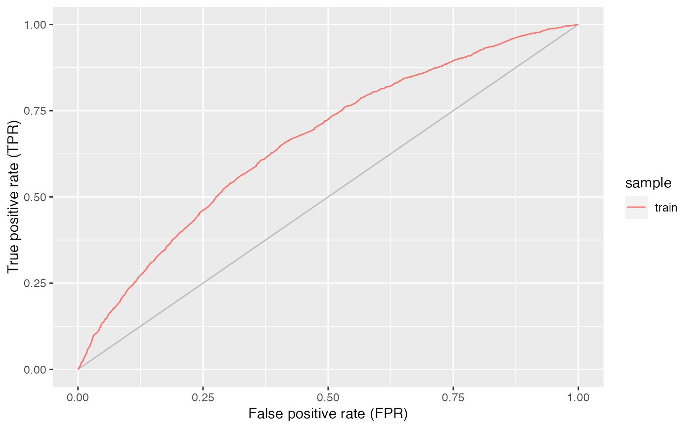gg_model_roc(m, newdata = dnew, size = 2)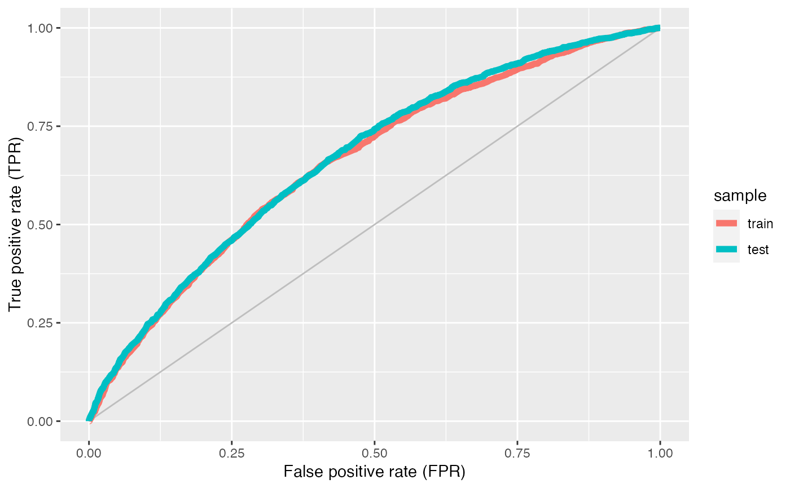gg_model_ks(m)gg_model_ks(m, newdata = dnew, size = 2)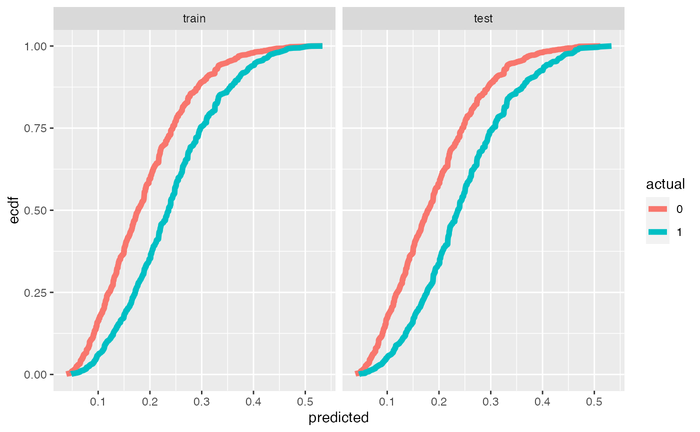gg_model_coef(m)#>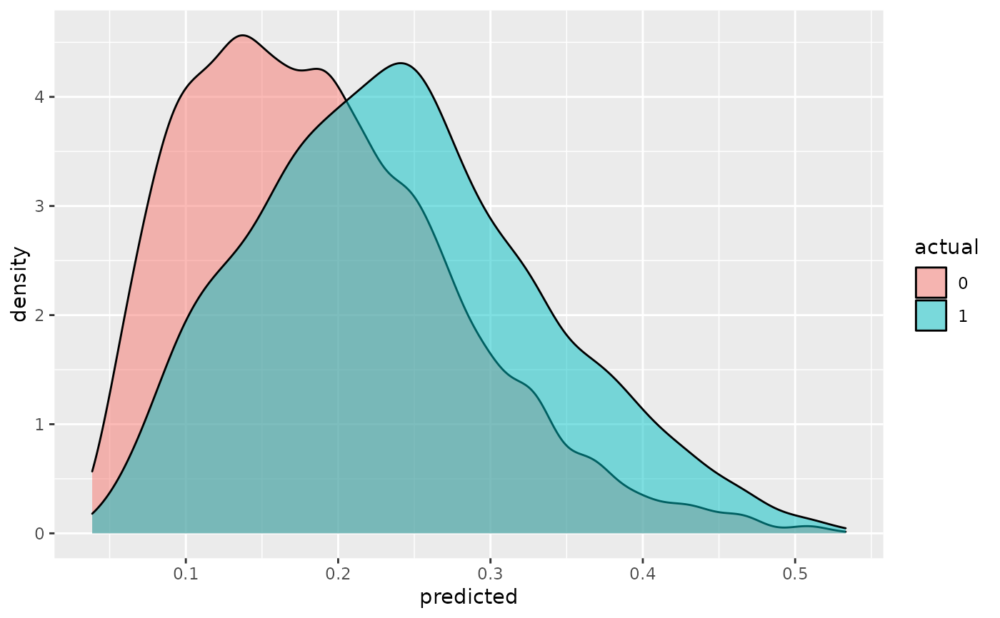gg_model_corr(m)#> #> #>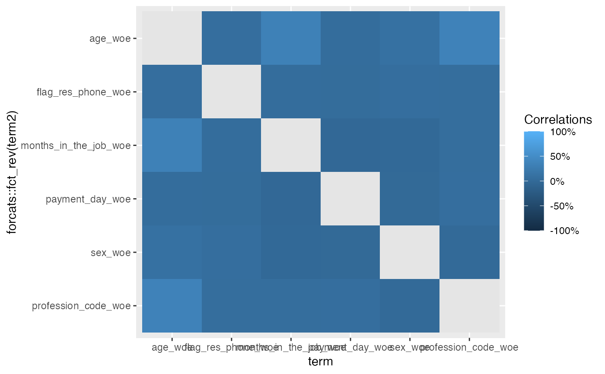gg_model_vif(m)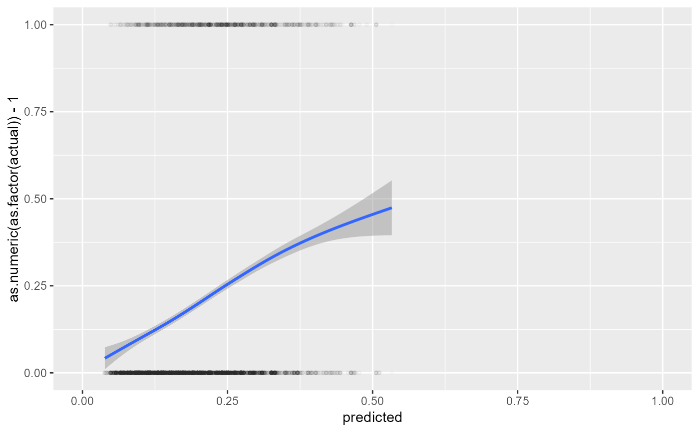gg_model_importance(m)#> Preparation of a new explainer is initiated #> -> model label : lm ( default ) #> -> data : 10000 rows 6 cols #> -> data : tibble converted into a data.frame #> -> target variable : 10000 values #> -> predict function : yhat.glm will be used ( default ) #> -> predicted values : No value for predict function target column. ( default ) #> -> model_info : package stats , ver. 4.1.0 , task classification ( default ) #> -> predicted values : numerical, min = 0.03852792 , mean = 0.199 , max = 0.5331556 #> -> residual function : difference between y and yhat ( default ) #> -> residuals : numerical, min = -0.5331556 , mean = -4.122184e-10 , max = 0.9519349 #> A new explainer has been created!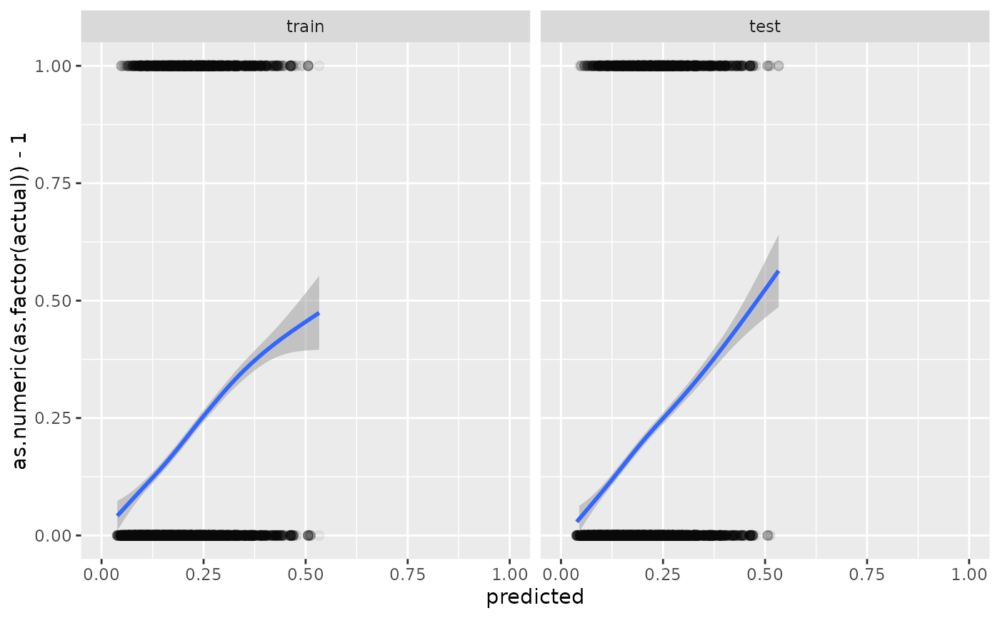gg_model_partials(m)#>#>#>#>#>#>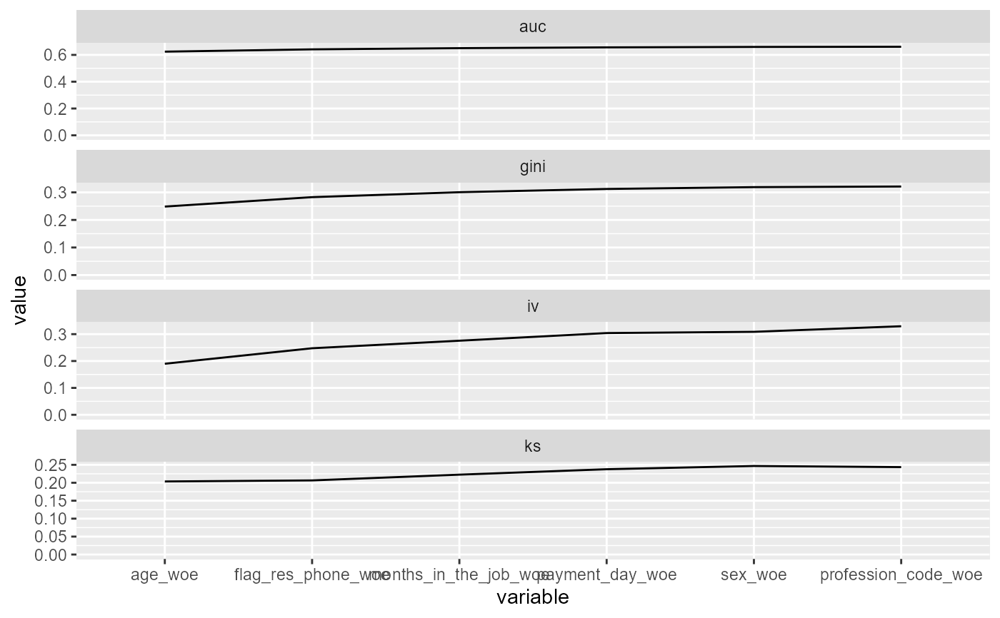#>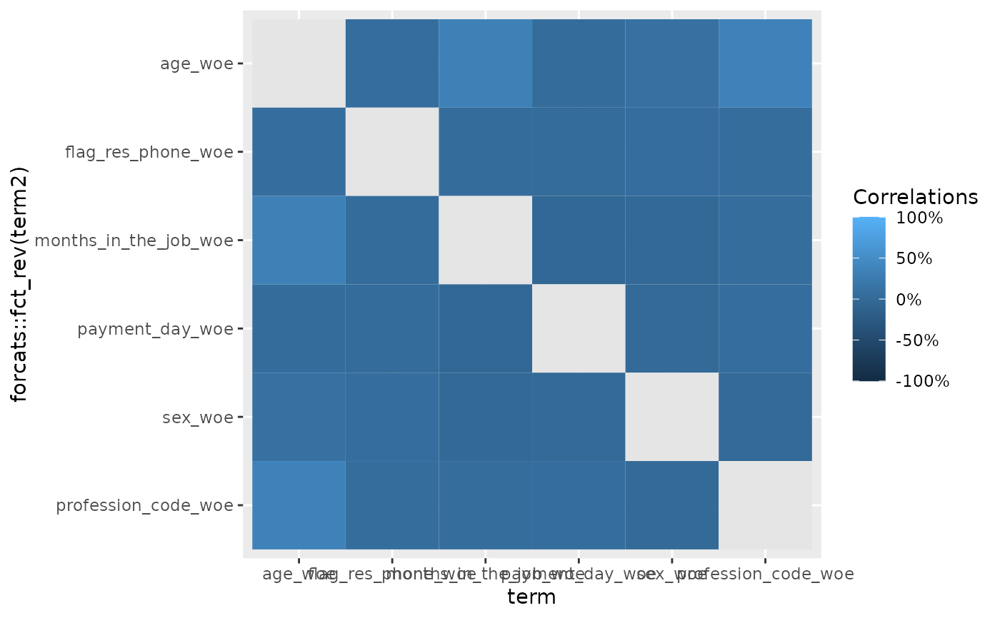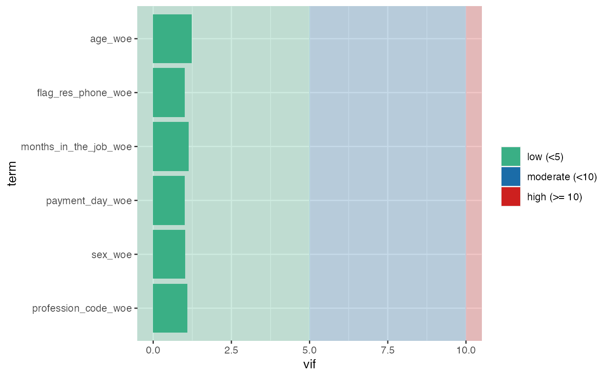gg_model_corr(m, upper = TRUE)#> #> #>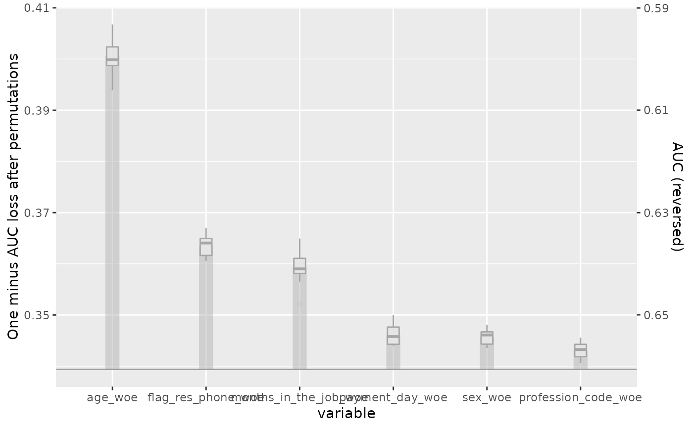gg_model_corr(m, upper = TRUE) + ggplot2::coord_flip() + ggplot2::scale_y_discrete(limits = rev) + ggplot2::scale_x_discrete(limits = rev)#> #> #>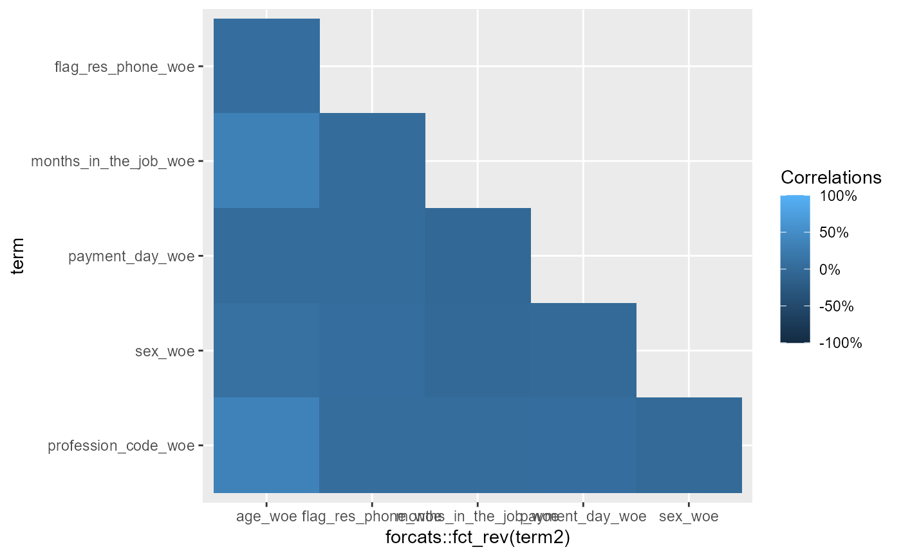